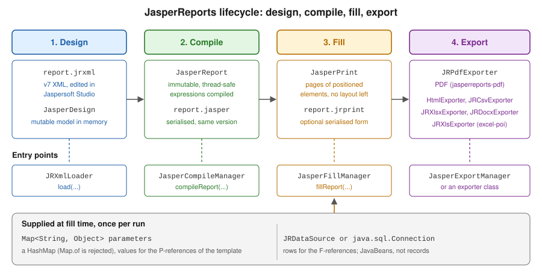

JasperReports Architecture & Lifecycle
|
This content was generated with the assistance of AI and should be verified against the official documentation before being relied on in production. |
Baseline date: 2026-10-09. JasperReports is a reporting engine: the report designer describes a layout in an XML template, the program supplies parameters and data, and the engine produces a document that can be exported to PDF and other formats. Everything in the library follows one pipeline of four stages, and knowing which object belongs to which stage explains most of the questions that come up later: why compilation is done once, why the PDF exporter is a separate dependency, why a template written for version 6 does not load in version 7, and where a class has gone when an import no longer resolves.
This page describes that pipeline for JasperReports 7.0.8 using the monthly invoice summary of the Bookshelf Billing service as the example, and shows a complete program that goes through all four stages. The details of each stage are covered by the other JasperReports pages of this section, starting with JRXML Report Design. The Maven setup inside a Spring Boot service is in Getting Started with Spring Boot.
The examples were compiled and run with Java 21 as the language level, against JasperReports 7.0.8 and its PDF extension, with the plain Maven build shown below. What the run showed is marked as such in the text.
The four stages
A report goes through four stages, and each stage has its own object model.

- Design
-
The template is a JRXML file (or a
JasperDesignobject built in Java). It describes the page size, the bands (title, detail, summary and so on), the parameters, fields and variables it expects, and the expressions that compute what each element shows. AJasperDesignis mutable and is only a description; it cannot be filled. - Compile
-
The engine validates the design and turns its expressions into compiled code. The result is a
JasperReport, which is immutable and safe to share between threads. AJasperReportcan be serialised to a.jasperfile and loaded back. - Fill
-
The engine runs the compiled report against parameter values and a data source (a
JRDataSource, or a JDBCConnectionfor a template that carries its own query). The result is aJasperPrint: a list of pages, each holding positioned elements with their final text and geometry. After the fill there is no layout left to compute, and the print object does not depend on the template any more. It can be serialised to a.jrprintfile. - Export
-
An exporter walks the
JasperPrintand writes it as PDF, HTML, CSV, Excel, Word and other formats. The sameJasperPrintcan be exported several times, to several formats.
The split matters in practice. Compilation is the slow stage, so a service compiles at start-up or at build time and
keeps the JasperReport. Filling is the stage that uses the request data and the request parameters, so it happens
once per document. Exporting is where the output format and its settings are chosen, so the same fill can produce a PDF
for download and an HTML preview.
The objects and where they come from
| Object | Stage | What it is |
|---|---|---|
|
Design |
The mutable in-memory form of a template. Created by |
|
Compile |
The compiled, immutable template. Created by |
|
Fill |
The filled document: pages of positioned elements. Created by |
Exporter, such as |
Export |
Writes a |
Three managers are the entry points of the stages. They offer static convenience methods that use the default context,
and instance methods that use a context you choose, which is described in the section on JasperReportsContext below.
-
JasperCompileManagerloads, validates and compiles.compileReportaccepts a JRXML file name, an input stream or aJasperDesign, andcompileReportToFilewrites the.jasperfile as well. -
JasperFillManagerhasfillReportfor a data source or a connection, andfillReportToFileto write a.jrprint. -
JasperExportManagerhas the short form for the common formats, such asexportReportToPdf(a byte array) andexportReportToPdfFile. For anything configurable, use the exporter class directly.
The JRXML itself is read by JRXmlLoader, and the serialisation helpers are JRSaver and JRLoader.
A complete program
The program below goes through all four stages and also exports with the configurable form of the exporter. It is verified: it compiled with Java 21 as the language level and produced valid PDFs with the expected text.
The build is a plain Maven project. The engine, which is the core artifact jasperreports, does not contain the PDF
exporter, so jasperreports-pdf is added with the same version.
<project xmlns="http://maven.apache.org/POM/4.0.0">
<modelVersion>4.0.0</modelVersion>
<groupId>bookshelf</groupId>
<artifactId>jasper-lifecycle</artifactId>
<version>1.0.0</version>
<properties>
<maven.compiler.release>21</maven.compiler.release>
<project.build.sourceEncoding>UTF-8</project.build.sourceEncoding>
<jasperreports.version>7.0.8</jasperreports.version>
</properties>
<dependencies>
<dependency>
<groupId>net.sf.jasperreports</groupId>
<artifactId>jasperreports</artifactId>
<version>${jasperreports.version}</version>
</dependency>
<dependency>
<groupId>net.sf.jasperreports</groupId>
<artifactId>jasperreports-pdf</artifactId>
<version>${jasperreports.version}</version>
</dependency>
</dependencies>
</project>The template is in the JasperReports 7 JRXML format: no namespace, no DTD, and each visual element is an element
with a kind. The title and the summary are bands that hold their elements directly, and properties such as hTextAlign and
pattern are plain attributes. The template is saved as src/main/resources/reports/invoice-summary.jrxml.
<jasperReport name="invoice-summary" language="java" pageWidth="595" pageHeight="842"
columnWidth="515" leftMargin="40" rightMargin="40" topMargin="40" bottomMargin="40">
<parameter name="CUSTOMER" class="java.lang.String"/>
<field name="title" class="java.lang.String"/>
<field name="quantity" class="java.lang.Integer"/>
<field name="amount" class="java.math.BigDecimal"/>
<variable name="grandTotal" calculation="Sum" class="java.math.BigDecimal">
<expression><![CDATA[$F{amount}]]></expression>
</variable>
<title height="50">
<element kind="textField" x="0" y="0" width="515" height="30" fontSize="18" bold="true">
<expression><![CDATA["Bookshelf invoice for " + $P{CUSTOMER}]]></expression>
</element>
</title>
<detail>
<band height="20">
<element kind="textField" x="0" y="0" width="300" height="18">
<expression><![CDATA[$F{title}]]></expression>
</element>
<element kind="textField" x="300" y="0" width="60" height="18" hTextAlign="Right">
<expression><![CDATA[$F{quantity}]]></expression>
</element>
<element kind="textField" x="365" y="0" width="150" height="18" hTextAlign="Right" pattern="#,##0.00">
<expression><![CDATA[$F{amount}]]></expression>
</element>
</band>
</detail>
<summary height="30">
<element kind="textField" x="365" y="5" width="150" height="20" bold="true" hTextAlign="Right" pattern="#,##0.00">
<expression><![CDATA[$V{grandTotal}]]></expression>
</element>
</summary>
</jasperReport>The template reads a parameter $P{CUSTOMER}, three fields $F{title}, $F{quantity} and $F{amount} from each
row, and a variable $V{grandTotal} that sums the amounts. The meaning of each of these kinds of expression is the
subject of
Expressions, Parameters, Fields & Variables.
The rows are a JavaBean. The bean data source reads values through getters named after the fields, so the class has
getTitle, getQuantity and getAmount.
package bookshelf;
import java.math.BigDecimal;
public class InvoiceLine {
private final String title;
private final int quantity;
private final BigDecimal amount;
public InvoiceLine(String title, int quantity, BigDecimal amount) {
this.title = title;
this.quantity = quantity;
this.amount = amount;
}
public String getTitle() {
return title;
}
public int getQuantity() {
return quantity;
}
public BigDecimal getAmount() {
return amount;
}
}A Java record does not work here. The bean data source finds a field through a getter method named getXxx, and a
record exposes plain accessors such as title(). In the verification runs for this section, a record used as a row
failed to resolve its fields. Use a classic bean, a Map per row with JRMapCollectionDataSource, or a small adapter, as described in
Generating Reports from Databases & Services.
The program itself:
package bookshelf;
import java.io.File;
import java.io.InputStream;
import java.math.BigDecimal;
import java.nio.file.Files;
import java.nio.file.Path;
import java.util.HashMap;
import java.util.List;
import java.util.Map;
import net.sf.jasperreports.engine.JRDataSource;
import net.sf.jasperreports.engine.JasperCompileManager;
import net.sf.jasperreports.engine.JasperExportManager;
import net.sf.jasperreports.engine.JasperFillManager;
import net.sf.jasperreports.engine.JasperPrint;
import net.sf.jasperreports.engine.JasperReport;
import net.sf.jasperreports.engine.data.JRBeanCollectionDataSource;
import net.sf.jasperreports.engine.design.JasperDesign;
import net.sf.jasperreports.engine.util.JRLoader;
import net.sf.jasperreports.engine.util.JRSaver;
import net.sf.jasperreports.engine.xml.JRXmlLoader;
import net.sf.jasperreports.export.SimpleExporterInput;
import net.sf.jasperreports.export.SimpleOutputStreamExporterOutput;
import net.sf.jasperreports.pdf.JRPdfExporter;
import net.sf.jasperreports.pdf.SimplePdfExporterConfiguration;
public class Lifecycle {
public static void main(String[] args) throws Exception {
Path out = Files.createDirectories(Path.of("target", "out"));
// 1. Design: parse the JRXML into a JasperDesign.
JasperDesign design;
try (InputStream jrxml = Lifecycle.class.getResourceAsStream("/reports/invoice-summary.jrxml")) {
design = JRXmlLoader.load(jrxml);
}
// 2. Compile: the result is an immutable JasperReport that can be saved as a .jasper file.
JasperReport report = JasperCompileManager.compileReport(design);
File jasperFile = out.resolve("invoice-summary.jasper").toFile();
JRSaver.saveObject(report, jasperFile);
JasperReport reloaded = (JasperReport) JRLoader.loadObject(jasperFile);
// 3. Fill: template + parameters + data = JasperPrint.
Map<String, Object> params = new HashMap<>();
params.put("CUSTOMER", "Ada Lovelace");
JRDataSource data = new JRBeanCollectionDataSource(List.of(
new InvoiceLine("Dune", 1, new BigDecimal("12.50")),
new InvoiceLine("Neuromancer", 2, new BigDecimal("19.80"))));
JasperPrint print = JasperFillManager.fillReport(reloaded, params, data);
JRSaver.saveObject(print, out.resolve("invoice-summary.jrprint").toFile());
// 4a. Export, short form.
JasperExportManager.exportReportToPdfFile(print, out.resolve("short.pdf").toString());
// 4b. Export, configurable form.
JRPdfExporter exporter = new JRPdfExporter();
exporter.setExporterInput(new SimpleExporterInput(print));
exporter.setExporterOutput(new SimpleOutputStreamExporterOutput(out.resolve("long.pdf").toFile()));
SimplePdfExporterConfiguration configuration = new SimplePdfExporterConfiguration();
configuration.setMetadataTitle("Invoice summary");
exporter.setConfiguration(configuration);
exporter.exportReport();
System.out.println("pages=" + print.getPages().size());
}
}Three details of the verification run are worth knowing. The parameter map is a HashMap: Map.of(...) was rejected
at fill time, because the engine writes to the map it receives, so the map must be mutable. The exporter
classes are in net.sf.jasperreports.pdf, not in the core packages, which is the subject of the section on moved
packages. And the PDF content was inspected: it holds the title with the customer name and the three rows.
The program derives from the JasperReports samples on the
compiled report sample, which shows the
compile, fill and export calls and the .jasper workflow, and from the API pages of
JasperCompileManager,
JasperFillManager and
JasperExportManager.
Building the design in Java
A .jrxml file is only one way to produce a JasperDesign. The design classes are public API, so a template can be
built, or modified, by code: add a field, a band and a text field, then compile it like any other design. This is
useful when the layout depends on data that is only known at run time, such as one column per month, and it is the
approach of the official sample on designs without XML.
package bookshelf;
import java.math.BigDecimal;
import java.nio.file.Files;
import java.nio.file.Path;
import java.util.HashMap;
import java.util.List;
import net.sf.jasperreports.engine.JasperCompileManager;
import net.sf.jasperreports.engine.JasperExportManager;
import net.sf.jasperreports.engine.JasperFillManager;
import net.sf.jasperreports.engine.JasperPrint;
import net.sf.jasperreports.engine.JasperReport;
import net.sf.jasperreports.engine.data.JRBeanCollectionDataSource;
import net.sf.jasperreports.engine.design.JRDesignBand;
import net.sf.jasperreports.engine.design.JRDesignExpression;
import net.sf.jasperreports.engine.design.JRDesignField;
import net.sf.jasperreports.engine.design.JRDesignSection;
import net.sf.jasperreports.engine.design.JRDesignTextField;
import net.sf.jasperreports.engine.design.JasperDesign;
public class CodeDesign {
public static void main(String[] args) throws Exception {
JasperDesign design = new JasperDesign();
design.setName("titles-list");
design.setPageWidth(595);
design.setPageHeight(842);
design.setColumnWidth(515);
design.setLeftMargin(40);
design.setRightMargin(40);
design.setTopMargin(40);
design.setBottomMargin(40);
JRDesignField title = new JRDesignField();
title.setName("title");
title.setValueClass(String.class);
design.addField(title);
JRDesignTextField text = new JRDesignTextField();
text.setX(0);
text.setY(0);
text.setWidth(515);
text.setHeight(18);
text.setExpression(new JRDesignExpression("$F{title}"));
JRDesignBand detail = new JRDesignBand();
detail.setHeight(20);
detail.addElement(text);
((JRDesignSection) design.getDetailSection()).addBand(detail);
JasperReport report = JasperCompileManager.compileReport(design);
JasperPrint print = JasperFillManager.fillReport(report, new HashMap<>(),
new JRBeanCollectionDataSource(List.of(
new InvoiceLine("Dune", 1, BigDecimal.ONE),
new InvoiceLine("Neuromancer", 1, BigDecimal.ONE))));
Path out = Files.createDirectories(Path.of("target", "out"));
JasperExportManager.exportReportToPdfFile(print, out.resolve("code-design.pdf").toString());
}
}This also compiled and ran against 7.0.8 and produced a one-page PDF with the two titles. The class names are the same
as in version 6, and the design package is part of the core artifact. Note that new HashMap<>() is passed as the
parameter map for the same reason as before. The official sample is
noxmldesign, and the model is documented in the
JasperDesign Javadoc.
Compiling: when, where and with what
Compiling a template is slower than filling it, and a compiled JasperReport is immutable, so the usual rule is to
compile once and reuse. There are three places to do it.
-
At build time, with the JasperReports Maven plugin or a build step that calls
JasperCompileManager, and shipping the.jasperfiles. The cost is moved out of the service, but the.jasperfiles are tied to the library version they were compiled with. -
At service start-up, from the JRXML on the classpath, keeping the
JasperReportin a field. This is the approach used by the examples of this section because it has no version coupling and the compile cost is paid once. -
On demand, cached by template name. This is needed only when templates are uploaded or edited while the service runs.
The version coupling is real in 7.0. The release notes of the library state that the backward compatibility of
serialised .jasper files was deliberately broken in 7.0 and that JRXML templates have to be recompiled with the new
library. So .jasper files built with version 6 cannot be loaded by version 7, and the safest practice is to treat
.jasper as a build artefact of the exact JasperReports version in the pom.xml, never as a source file that is
checked in.
A service that fills a template many times keeps the compiled object and creates a new parameter map and data source for each request. The class below was run against 7.0.8: it compiled on construction, produced a valid PDF header and reused the compiled report.
package bookshelf;
import java.io.IOException;
import java.io.InputStream;
import java.util.HashMap;
import java.util.List;
import java.util.Map;
import net.sf.jasperreports.engine.JRException;
import net.sf.jasperreports.engine.JasperCompileManager;
import net.sf.jasperreports.engine.JasperExportManager;
import net.sf.jasperreports.engine.JasperFillManager;
import net.sf.jasperreports.engine.JasperPrint;
import net.sf.jasperreports.engine.JasperReport;
import net.sf.jasperreports.engine.data.JRBeanCollectionDataSource;
public class InvoiceReportService {
private final JasperReport report;
public InvoiceReportService() {
try (InputStream jrxml = getClass().getResourceAsStream("/reports/invoice-summary.jrxml")) {
this.report = JasperCompileManager.compileReport(jrxml); // slow: done once
} catch (IOException | JRException e) {
throw new IllegalStateException("Cannot compile invoice-summary.jrxml", e);
}
}
public byte[] renderPdf(String customer, List<InvoiceLine> lines) throws JRException {
Map<String, Object> parameters = new HashMap<>(); // new, mutable map per fill
parameters.put("CUSTOMER", customer);
JasperPrint print = JasperFillManager.fillReport(report, parameters, new JRBeanCollectionDataSource(lines));
return JasperExportManager.exportReportToPdf(print);
}
}How to expose this as a Spring bean and an endpoint is in JasperReports in Spring Boot.
The compiler
Compilation turns the report expressions into Java classes. Which compiler does that depends on what is on the class
path, and the run showed it: with only the core and PDF artifacts, the engine used its javax.tools compiler
(JRJdk13Compiler), which needs a JDK at run time, so it does not work on a bare JRE. With
jasperreports-jdt added, JRJdtCompiler was used instead, and no JDK is needed. The Eclipse JDT compiler is therefore
the right choice for a service that runs on a JRE-only image. A template whose language attribute is groovy needs
the jasperreports-groovy module, and the javascript language needs jasperreports-javascript, both of which are
named in the default configuration of the core. Java is the default and the one used by every example of this section.
The configuration reference lists the compiler properties, such as the option to keep the generated Java source and the temporary directory, in the configuration reference.
JasperReportsContext
Every manager, exporter and many helper classes need to find configuration properties, registered extensions, fonts,
repository services and caches. JasperReportsContext is the object that provides them. DefaultJasperReportsContext.getInstance()
is the application-wide singleton, which is what the static methods such as JasperFillManager.fillReport use, and it
reads the properties files and extension registries it finds on the class path, such as jasperreports.properties.
An application that needs a different configuration for one tenant, one report or one test creates its own context
instead of changing global state. SimpleJasperReportsContext wraps another context, here the default, and lets the
program set properties and register extensions on top of it. The instance-based entry points take the context.
package bookshelf;
import java.math.BigDecimal;
import java.util.HashMap;
import java.util.List;
import java.util.Map;
import net.sf.jasperreports.engine.DefaultJasperReportsContext;
import net.sf.jasperreports.engine.JasperCompileManager;
import net.sf.jasperreports.engine.JasperFillManager;
import net.sf.jasperreports.engine.JasperPrint;
import net.sf.jasperreports.engine.JasperReport;
import net.sf.jasperreports.engine.SimpleJasperReportsContext;
import net.sf.jasperreports.engine.data.JRBeanCollectionDataSource;
import net.sf.jasperreports.engine.design.JasperDesign;
import net.sf.jasperreports.export.SimpleExporterInput;
import net.sf.jasperreports.export.SimpleOutputStreamExporterOutput;
import net.sf.jasperreports.pdf.JRPdfExporter;
public class WithContext {
static void run(JasperDesign design, java.io.File target) throws Exception {
SimpleJasperReportsContext context = new SimpleJasperReportsContext(DefaultJasperReportsContext.getInstance());
context.setProperty("net.sf.jasperreports.awt.ignore.missing.font", "true");
JasperReport report = JasperCompileManager.getInstance(context).compile(design);
Map<String, Object> params = new HashMap<>();
params.put("CUSTOMER", "Ada Lovelace");
JasperPrint print = JasperFillManager.getInstance(context).fill(report, params,
new JRBeanCollectionDataSource(List.of(new InvoiceLine("Dune", 1, new BigDecimal("12.50")))));
JRPdfExporter exporter = new JRPdfExporter(context);
exporter.setExporterInput(new SimpleExporterInput(print));
exporter.setExporterOutput(new SimpleOutputStreamExporterOutput(target));
exporter.exportReport();
}
}The program ran and wrote a valid PDF. The property in the example, net.sf.jasperreports.awt.ignore.missing.font, is
a real, documented property that makes the engine tolerate a missing system font. The context is the place to put
properties that would otherwise be global, and the extension registries, which are the subject of
Scriptlets, Properties & Extensions.
The API is documented in
JasperReportsContext
and the other pages of the same Javadoc.
The 7.0 module split
Up to version 6 the library was one large JAR plus a handful of optional ones. Version 7 splits it deliberately, and
the project README explains why: the Jakarta migration needed the parts that depend on servlet, persistence and similar
APIs to be separate, and a split improves dependency management. The result is one core artifact, jasperreports, and
a number of optional extension artifacts, all in the group net.sf.jasperreports and all versioned together.
Two consequences matter for every Bookshelf Billing build. The first is that a missing module is a run-time failure, not
a compile-time one when the code reaches a class by name or through configuration. In the verification run, removing
jasperreports-pdf from the class path and calling JasperExportManager.exportReportToPdfFile raised
a JRRuntimeException with the message "Missing JasperReports PDF Extension (jasperreports-pdf-x.x.x.jar)", and exporting the
same print to HTML still worked, because the HTML exporter is part of the core. The second is that imports change:
a class that was in the one big JAR is now in a module, and often in a new package.
The modules published on Maven Central for 7.0.8 are listed below, as checked on 2026-10-09. The descriptions of
jasperreports-pdf, -fonts, -jdt, -json, -excel-poi and -data-adapters were checked against the contents of
their 7.0.8 JARs. The others come from the artifact names, their Maven descriptions and the default configuration of the
core, so treat them as pointers rather than as an exact inventory.
| Artifact | What it adds |
|---|---|
|
The core: JRXML loading, design, compilation, fill, the exporters for HTML, CSV, XML, text, Word, OpenDocument, RTF, XLSX and printing, the stock data sources (bean, map, CSV, XML, empty), JDBC queries and the component set. |
|
The PDF exporter, |
|
The DejaVu font families, the default report fonts. |
|
|
|
|
|
The Apache POI based classes: |
|
The data adapter classes, used by Jaspersoft Studio to define data connections, and the JDBC and XML data adapter implementations. |
|
Charts, on top of JFreeChart. |
|
The Barcode4J barcode components. |
|
The Groovy expression compiler. |
|
The JavaScript expression compiler. |
|
Integration with Spring. |
|
Servlet based viewers and web support. |
|
Optional query executers, function libraries, and exporters and adapters. |
Not every module moved to 7.0.8. Checked on 2026-10-09, jasperreports-sort, jasperreports-chrome,
jasperreports-interactivity, jasperreports-velocity and jasperreports-google-maps were last released as 7.0.1, and
jasperreports-custom-visualization stayed at 6.21.5, so a project that depends on one of them has to check that it
works with the rest. The Barcode4J library behind jasperreports-barcode4j is old and unmaintained, which is
taken up in the barcode pages of this section.
Which modules does a Bookshelf Billing service need? The minimum for a PDF is the core plus jasperreports-pdf.
Add jasperreports-fonts and jasperreports-jdt for the default fonts and a run-time compiler that needs no JDK, which is
the setup of
Getting Started with Spring Boot. Add jasperreports-json for the
JSON data sources, jasperreports-charts for the sales charts and jasperreports-excel-poi if the same report is also
exported to Excel. The Java baselines are given by the project: the core targets Java 8, and the modules for Jakarta,
Spring and Spring Boot need Java 17 or later.
Packages that moved in version 7
The books consulted for this section, B3 in particular, show classes in a dori.jasper.* package. That is the package
of the earliest versions of the library, before the project settled on net.sf.jasperreports.*, and no code from those
chapters compiles against a modern release. The engine has used net.sf.jasperreports.engine and its sub-packages
for the whole period since, and examples in books or old posts must be translated to those names first.
Version 7 then moved some classes a second time, as a consequence of the module split. The README states that some package names changed because functionality now lives in optional artifacts. Verified in the 7.0.8 JARs, the classes that Bookshelf Billing touches most are:
| Class | Package in 6.x | Package in 7.0.8 |
|---|---|---|
|
|
|
|
|
|
|
|
|
|
|
|
Not everything moved: JasperCompileManager, JasperFillManager, JasperExportManager, JRBeanCollectionDataSource,
HtmlExporter, JRCsvExporter, JRXlsxExporter and JRDocxExporter are still in the core JAR under their familiar
packages. When an import stops resolving after an upgrade, add the module first and then fix the import: the
class is in a new package inside a new artifact, as the table shows. The 6.x packages in the table are from the 6.x
releases as the documentation of that line shows them.
The template format changed too. The JRXML of version 6 and earlier was validated by a DTD and then by an XSD, and the
older books describe the DTD (jasperreport.dtd). In 7.0 the Apache Commons Digester parser was replaced by Jackson
XML object serialisation, the elements are written as <element kind="..."> without a namespace, and a JRXML or JRTX
file written for version 6 or older cannot be loaded by the version 7 library alone. The README says the conversion is
made with Jaspersoft Studio 7, and the migration is covered in the JRXML page,
JRXML Report Design.
Jaspersoft Studio and the other products
JasperReports is the library. Around it there are other products, and the README of the project lists them.
-
Jaspersoft Studio is the report designer for the library: an Eclipse based, free to use tool that edits JRXML, previews reports and defines data adapters. It is also the tool the README names for converting between the old and the new template formats. It is a design-time tool, not a run-time dependency of the service. Version 7 of Studio is the one that reads and writes the 7.0 format. The exact current version is not confirmed here, so check the Jaspersoft Community page.
-
JasperReports Server is a stand-alone and embeddable reporting server that stores, secures and schedules reports. Its Community Edition was withdrawn on 2024-01-25, and the current server is a commercial product, so it is not something to plan an open-source deployment around.
-
JasperReports Web Studio and JasperReports IO are described in the README as commercial products too: a web based designer, and a REST service that runs the library for non-Java clients.
The library does not need any of them. A Spring Boot service that holds JRXML files in its resources and runs the four stages in its own process, as in this page, uses only the Maven artifacts listed in the module section, and is licensed under the LGPL-3.0. One further edition difference matters for the PDF output and is covered in the PDF exporter page: in 7.0.8, tagged PDF, which is the basis of PDF/UA and of the accessible PDF/A levels, needs the commercial JasperReports Library Professional.
Where to go next
-
The template format, the bands and the elements: JRXML Report Design.
-
The values a template reads: Expressions, Parameters, Fields & Variables.
-
Where rows come from: Data Sources & Query Executers.
-
How the PDF output is configured: PDF exporter configuration.
-
Running the engine in a Spring Boot service: JasperReports in Spring Boot.